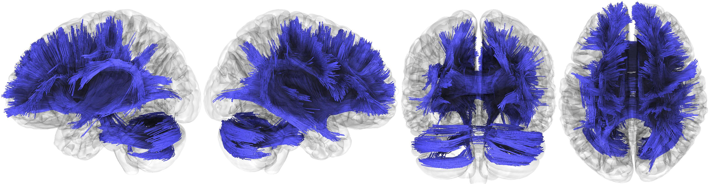
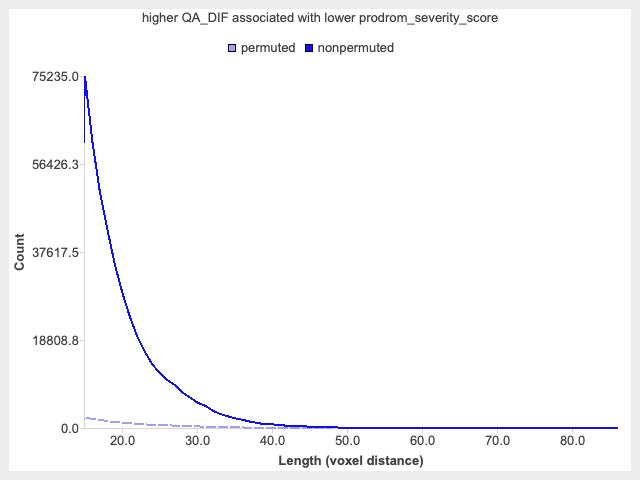
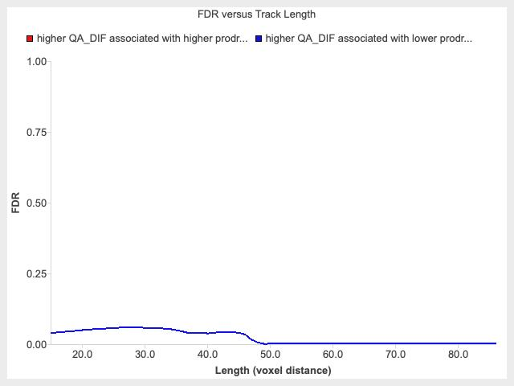

A total of 237 diffusion MRI scans were included in the connectometry database. A multishell diffusion scheme was used, and the b-values were 500 ,1000 ,2000 and 3000 s/mm². The number of diffusion sampling directions were 6, 15, 15, and 60, respectively. The in-plane resolution was 1.7 mm. The slice thickness was 1.7 mm. Motion correction was conducted with b-table rotated. The diffusion data were reconstructed in the MNI space using q-space diffeomorphic reconstruction (Yeh et al., Neuroimage, 58(1):91-9, 2011) to obtain the spin distribution function (Yeh et al., IEEE TMI, ;29(9):1626-35, 2010). A diffusion sampling length ratio of 1.25 was used. The output resolution in diffeomorphic reconstruction was 1.7 mm isotropic. The restricted diffusion was quantified using restricted diffusion imaging (Yeh et al., MRM, 77:603–612 (2017)). The tensor metrics were calculated using DWI with b-value lower than 1750 s/mm². The quantitative anisotropy was extracted as the local connectome fingerprint (LCF, Yeh et al. PLoS Comput Biol 12(11): e1005203) and used in the connectometry analysis.
Diffusion MRI connectometry (Yeh et al. NeuroImage 125 (2016): 162-171) was used to derive the correlational tractography that has a longitudinal change of QA_DIF correlated with prodrom_severity_score. A nonparametric Spearman partial correlation was used to derive the correlation, and the effect of age, sex_at_birth_F, sex_at_birth_M, race_ethnicity_Asian, race_ethnicity_Black, race_ethnicity_Hispanic, race_ethnicity_Other, race_ethnicity_White, mri_manufacturer_GE_MEDICAL_SYSTEMS, mri_manufacturer_Philips_Medical_Systems, mri_manufacturer_SIEMENS, hh_income_[<50K], hh_income_[>=100K], hh_income_[>=50K_&_<100K], high_educ_<_HS_Diploma, high_educ_Bachelor, high_educ_HS_Diploma_GED, high_educ_Post_Graduate_Degree, and high_educ_Some_College was removed using a multiple regression model. Subjects with group_Controls is 1 were selected. A total of 104 subjects were included in the analysis. A T-score threshold of 2.5 was assigned and tracked using a deterministic fiber tracking algorithm (Yeh et al. PLoS ONE 8(11): e80713, 2013) to obtain correlational tractography. A seeding region was placed at whole brain (39,49,29) . The tracks were filtered by topology-informed pruning (Yeh et al. Neurotherapeutics, 16(1), 52-58, 2019) with 16 iteration(s). An FDR threshold of 0.05 was used to select tracks. To estimate the false discovery rate, a total of 4000 randomized permutations were applied to the group label to obtain the null distribution of the track length.
Fig. Tracks with higher QA_DIF associated with higher prodrom_severity_score (FDR ≤ 0.050000)
The connectometry analysis did not find tracts showing significant higher QA_DIF associated with higher prodrom_severity_score (FDR ≤ 0.050000).
Fig. Tracks with higher QA_DIF associated with lower prodrom_severity_score (FDR ≤ 0.050000)
The connectometry analysis found tracts showing higher QA_DIF associated with lower prodrom_severity_score (FDR ≤ 0.050000).
Fig. Correlational tractography showing higher QA_DIF associated with higher prodrom_severity_score (red)(FDR ≤ 0.050000) and higher QA_DIF associated with lower prodrom_severity_score (blue)(FDR ≤ 0.050000).
Fig. Permutation test showing the histograms of track counts with higher QA_DIF associated with higher prodrom_severity_score.
Fig. Permutation test showing the histograms of track counts with higher QA_DIF associated with lower prodrom_severity_score.
The permutation was applied to subject labels to test results against permuted condition. The histogram under permuted condition represents the result under the null hypothesis. This null result is then used to test the histogram under nonpermuted condition to compute the FDR. A smaller difference between histograms suggests that the study finding is similar to null finding and having a lower significance, whereas a larger difference suggests greater significance of the study finding. Fig. The False discovery rate (FDR) at different track length